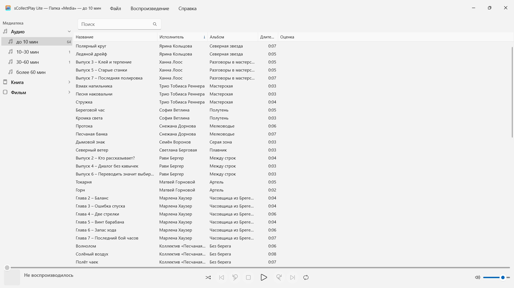
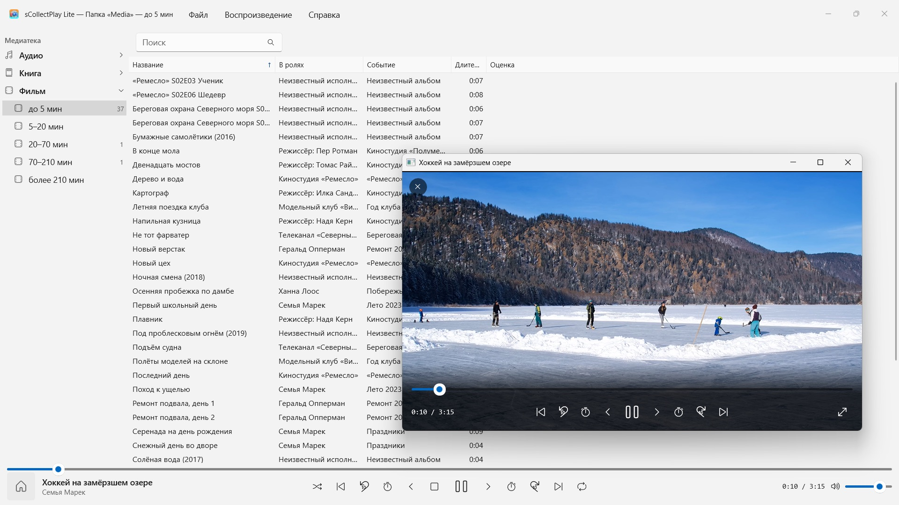

sCollectPlay Lite
Бесплатно: выберите папку и воспроизводите — без импорта и копирования
Бесплатно · В Microsoft Store с ноября 2026 г.Бесплатно: выберите папку и воспроизводите – музыка, аудиокниги, подкасты, фильмы и электронные книги упорядочиваются сами. Без импорта, без учётной записи, без облака. А также медиатеки iTunes (XML).


sCollectPlay Lite воспроизводит ваше собрание там, где оно лежит: в любых папках, на внешних дисках или на сетевом диске. Выберите папку — и музыка, аудиокниги, подкасты, фильмы и электронные книги упорядоченно встанут в один список: без импорта, без копирования и без каких-либо изменений в ваших файлах.
24 языка: английский, немецкий, чешский, хорватский, нидерландский, финский, французский, венгерский, итальянский, японский, корейский, норвежский (букмол), персидский, польский, португальский, румынский, русский, испанский, шведский, тайский, турецкий, украинский, китайский (упрощённый и традиционный). Приложение следует языку интерфейса Windows.
Эта версия воспроизводит один источник за сеанс: папку или XML. Открывая другой, вы заменяете прежний.
ДВА ИСТОЧНИКА
- Папка: sCollectPlay Lite просматривает папку вместе с вложенными папками и читает название, исполнителя, альбом, жанр и длительность из самих файлов. Затем «Обновить сканированные папки» (Ctrl+R) читает только новые, изменённые и удалённые файлы.
- iTunes XML: медиатека iTunes для Windows с плейлистами, оценками и счётчиками воспроизведений. Чем является трек — музыкой, аудиокнигой, подкастом, художественным фильмом, сериалом или видеоклипом, — приложение берёт из XML.
ПОРЯДОК БЕЗ УСИЛИЙ
Папка не говорит, песня это или аудиокнига. Поэтому при сканировании sCollectPlay Lite распределяет файлы по длительности: аудио до 10 мин, 10–30 мин, 30–60 мин и более 60 мин, видео — от коротких клипов до фильмов длиннее трёх с половиной часов. Так песни, выпуски аудиоспектаклей и аудиокниги стоят отдельно, и вам ничего не нужно настраивать. Электронные книги и PDF приложение распознаёт по расширению.
НАЙТИ
- Поиск по названию, исполнителю, альбому, жанру и другим полям — в том числе внутри плейлистов
ВОСПРОИЗВЕДЕНИЕ
- Аудио с очередью, перемешиванием и повтором
- Видео в отдельном окне, с замедлением, покадровым шагом, выбором звуковой дорожки и субтитров и полноэкранным режимом
- Большинство форматов Windows воспроизводит сама — MP3, AAC, FLAC, OGG, Opus и WMA, а также MP4, MKV, AVI, WMV и MPG. То, что ей незнакомо, например AIFF, DSD или FLV, приложение передаёт программе, которая назначена в Windows для этого типа файлов, — например VLC
БОЛЬШЕ В ПОЛНОЙ ВЕРСИИ
sCollectPlay объединяет несколько папок в одно собрание, помнит последний источник и после перезапуска, а также предлагает обозреватель столбцов по жанру, исполнителю и альбому, свободно выбираемые столбцы, собственные и смарт-плейлисты и экспорт плейлистов в папку со списком M3U8 для VLC и устройств.
ВАШИ ФАЙЛЫ ОСТАЮТСЯ ТАКИМИ, КАК ЕСТЬ
sCollectPlay Lite не записывает теги, не изменяет метаданные и ничего не удаляет.
НА ВАШЕМ ПК, И ТОЛЬКО ТАМ
Ни учётных записей, ни облака, ни аналитики, ни рекламы. Приложение работает только с теми папками, которые вы ему дали. Каждый язык — с полной справкой.
- Требуется Windows 11 или новее
- 24 языка
- Поддержка: SwiftAppsBavaria@gmx.net
- Политика конфиденциальности sCollectPlay и sCollectPlay Lite